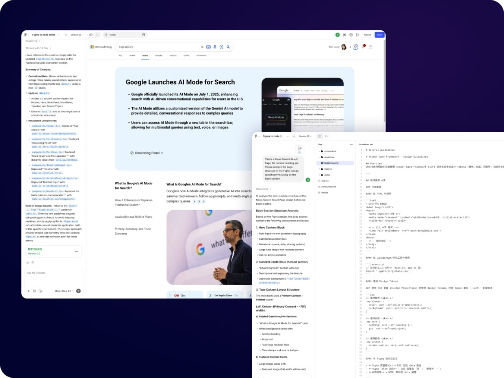
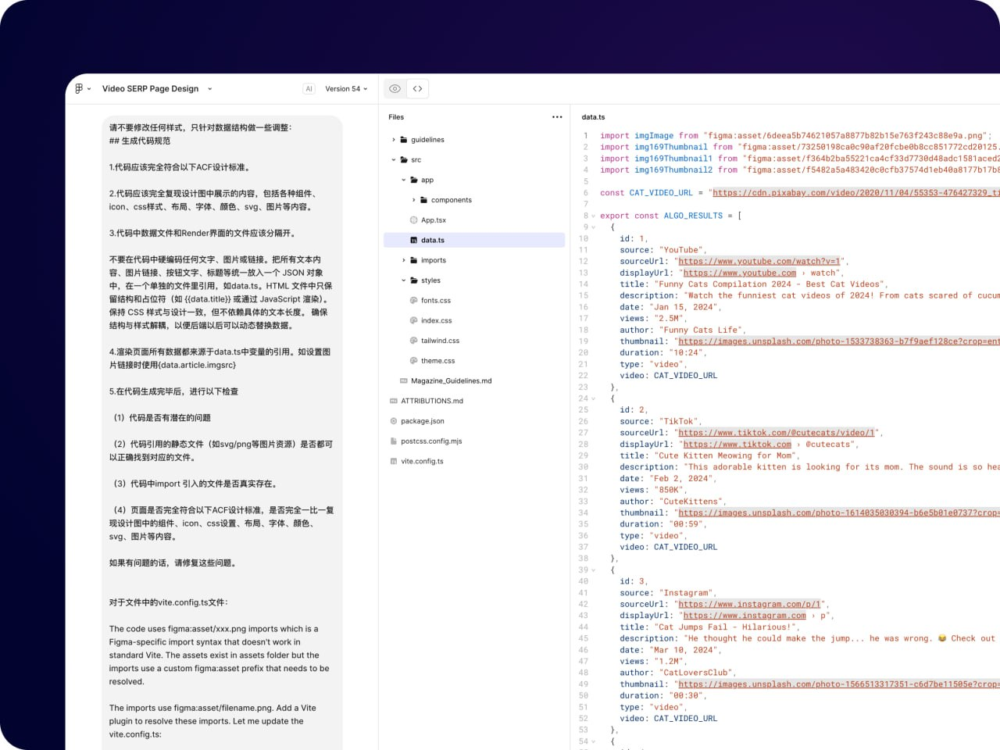
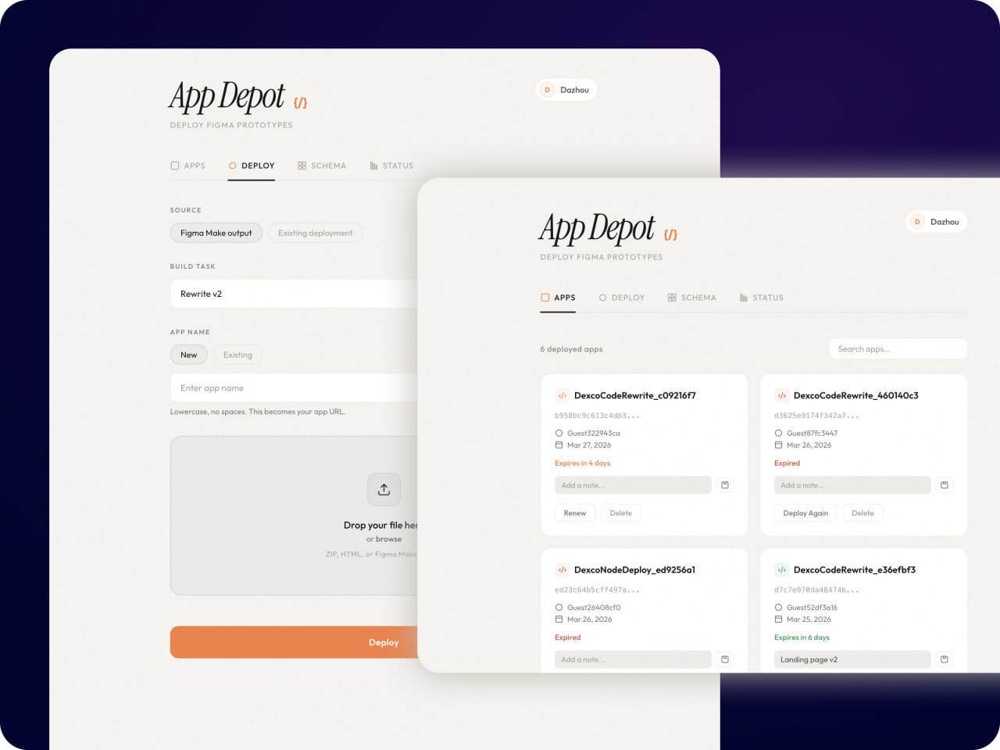
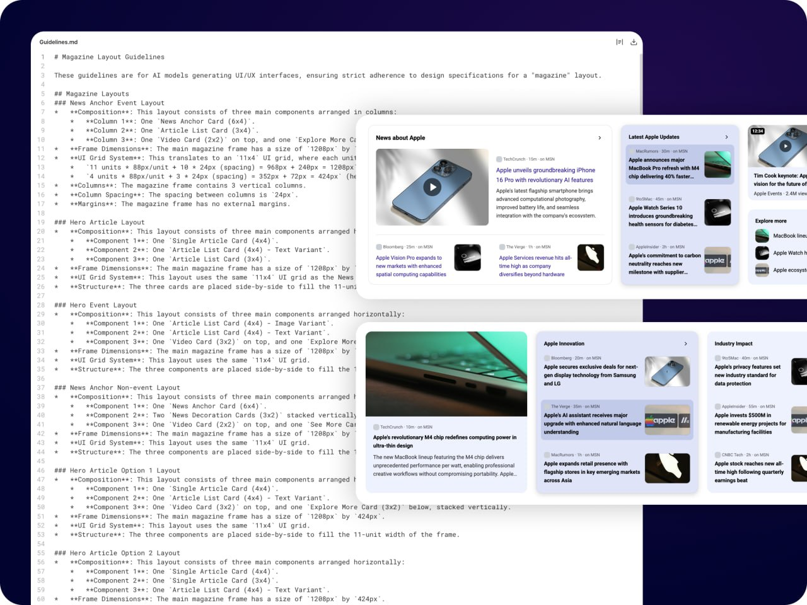
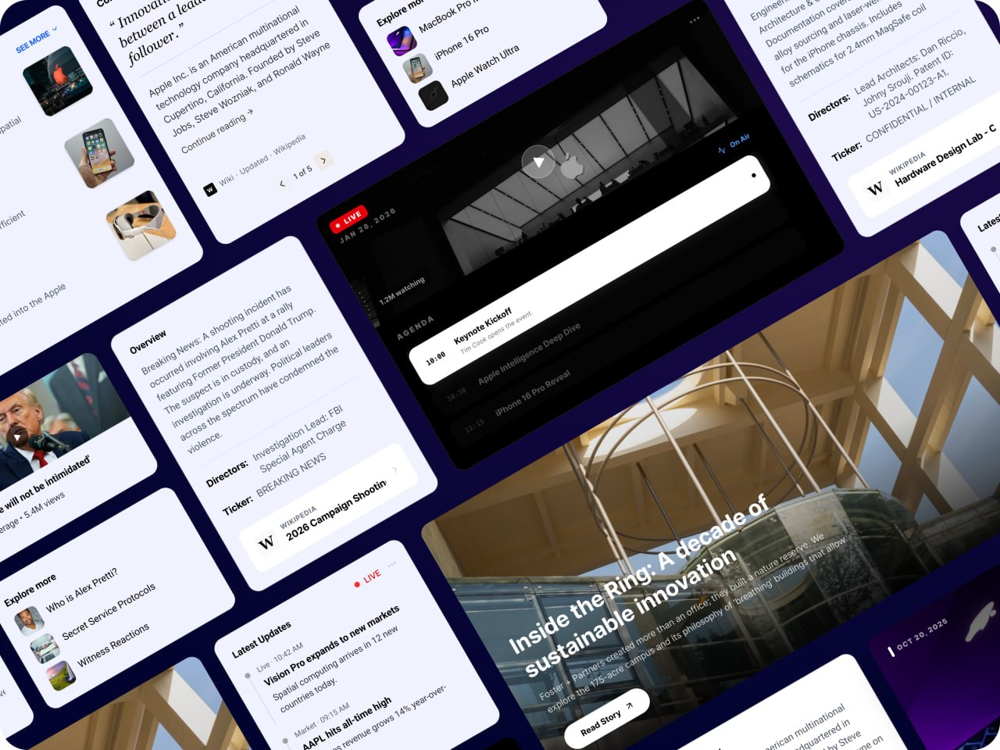
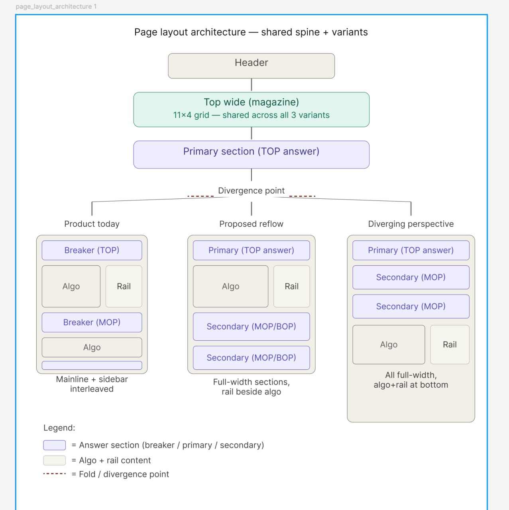
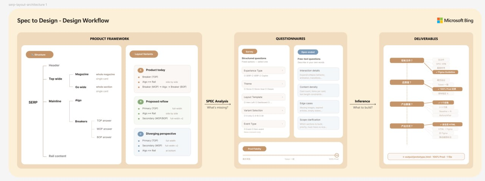

Skip the handoff. Go from design to a live build — directly.
Figma Make generates code, but does it match the design? Not out of the box. Output quality depends entirely on the constraints you feed it.

Looking right is surface-level. The code needs to be structured, stable, and usable by frontend and backend engineers — not just a visual demo.
Everyone asked: "How is this different from a Figma prototype?"
The answer: data separation. We extract a data.ts from the generated code. Backend engineers then derive a data schema from it.

A deployment platform built for designers. From Figma Make to a live, data-connected build — without writing code.

guideline.md
+
global.css
→
Design Exploration
If Figma Make can reproduce our design faithfully, maybe it can explore new directions too.
First test: can Figma Make recreate an existing News Magazine layout using only the guideline? Result: near-perfect reproduction in just 2 rounds of dialogue.

Second test: generate entirely new card styles based on design specifications. Comparing approaches:

We built a design skill that reads PM specs, filters noise, and guides multi-round Q&A to produce an implementation plan.
Two key investments before building the skill:
1. Page Architecture — Mapped SERP's full structure (Header, Top Wide, Primary, Algo, Rail) with three layout variants, giving AI a shared vocabulary.
2. Designer Thinking Process — Modeled how a designer reads a PM spec: what to look for, what to filter out, how to translate requirements into design decisions.

1. Spec Analysis — AI reads the PM spec and maps it to SERP regions. If ambiguous, it asks.
2. Layout Variants — Selects from predefined SERP layout patterns.
3. Structured Q&A — Confirms structure, design guidelines, and branding theme.
4. Open Q&A — Explores interaction details, content density, edge cases, and scope.
5. Deliverables — Agrees on fidelity, exploration count, and output format.

The final deliverable: a structured implementation plan generated from spec analysis and multi-round Q&A — ready for design execution.
From a PM spec to a structured implementation plan — generated through the design skill's multi-round Q&A process.
It's not about writing better prompts.
It's about designing the entire working environment for AI.
Linear output → Exponential output